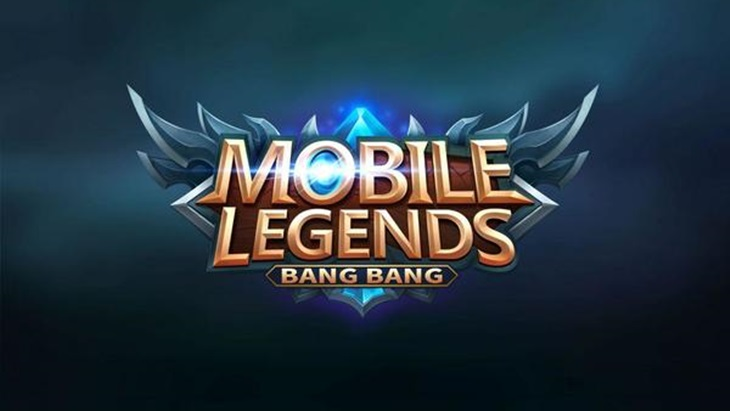
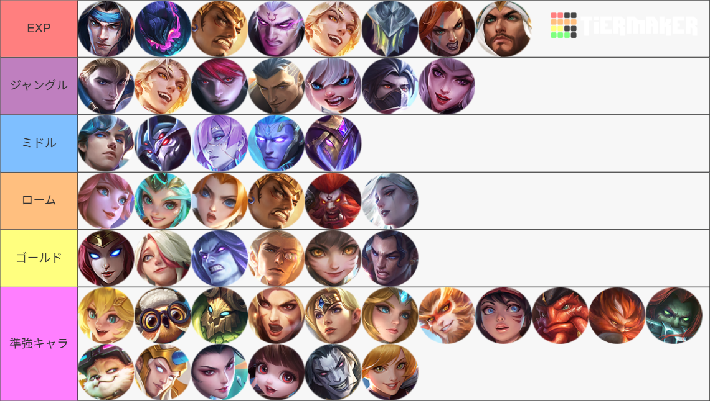
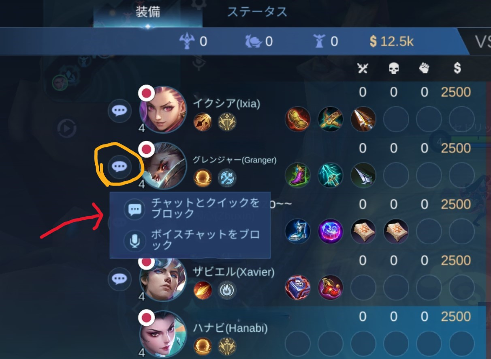
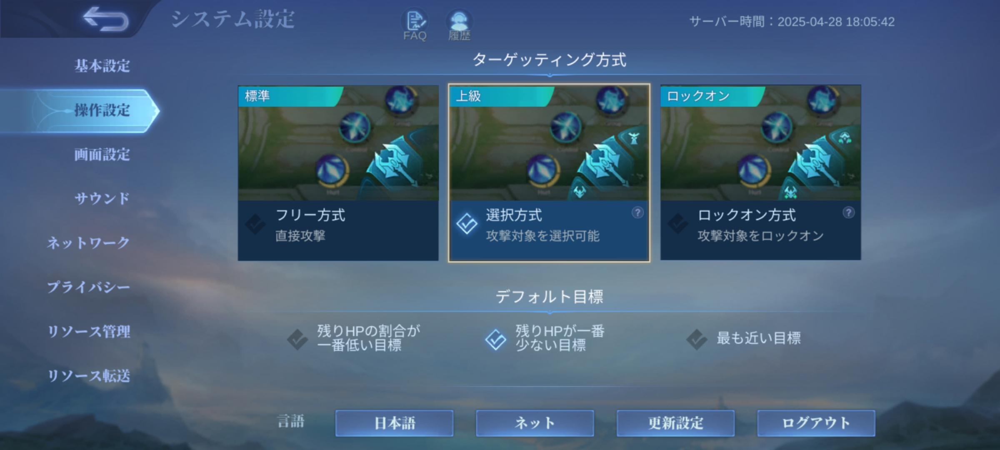
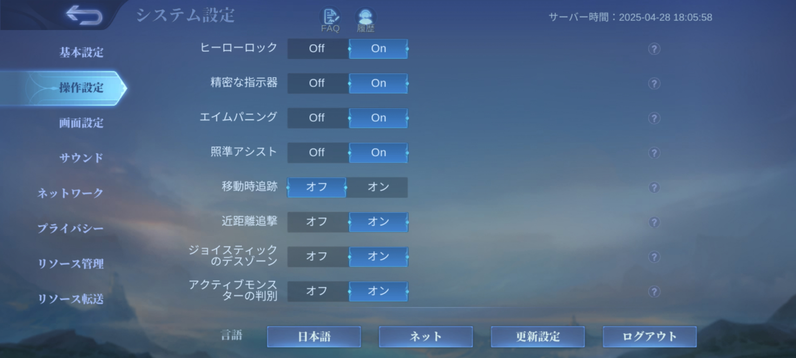
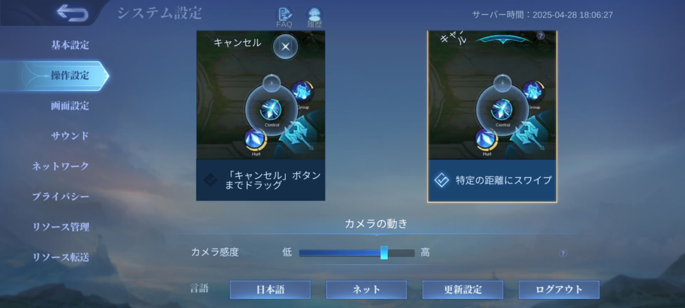
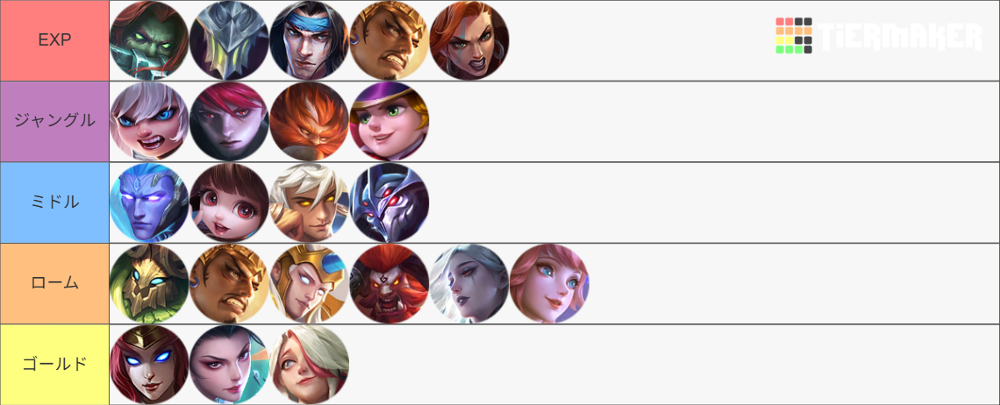

【モバイルレジェンド】攻略ガイド
モバイルレジェンドの攻略情報や初心者向けヒントを掲載。詳細は初心者攻略をチェック！
【モバイルレジェンド】
レーン別の強キャラクター表

モバイルレジェンドS36のレーン別の強キャラクター表です。 ほぼ誤差ですが左に行くほど評価が高いです。 操作難易度が高く、上手い人が使えば強いようなキャラクターは評価を少し下げています。
【モバイルレジェンド】初心者攻略情報
モバイルレジェンドについて
１．設定
このゲームは少し治安が悪いので、チャットを表示しないようにすることをおすすめします。「設定」→「サウンド」→「バトルチャット」、「ボイスチャット」をオフにする。
それか、非表示にしたい人の「チャットとクイックをブロック」を押してください。
あとは以下の設定と同じにすることをおすすめします。
  もっと詳しく知りたい場合はこの動画がおすすめです。
.avif)
２．ゲームの進め方を理解しよう
モバイルレジェンドはMOBAという少し特殊なゲームのジャンルです。なので、最初はどういったゲームなのかイメージを持つことが大切です。そのためにすべきことは
- １．上級チュートリアルをすべてクリアする
- ２．上手い人の動画、特にゲームの進め方を意識して見て、どういったゲームなのかイメージを持つ
- ３，解説動画を見る
３．レーン・役割をざっくり解説
「Expレーン」
近接キャラクター同士で殴り合います。基本的に集団戦では前線に立って戦います。基本的に集団戦では前線に立って戦います。
「ジャングル」
ジャングル内のモンスターを狩り、敵へのガンクを行います。ロードやタートルを確保するのも重要な仕事です。ジャングルの立ち回りは難しく、試合全体に大きな影響を与えるため、非常に重要なロールと言えます。ロードやタートルも確保する重要な仕事です。
「ミドルレーン」
魔法を使った攻撃が得意で、ガンクにも参加します。マップの中央に位置するため、集団戦に巻き込まれたり、逆に巻き込んだりすることが多いレーンです。
「ローム」
ブッシュに潜む敵を見つけたり、視界を確保する役割を担います。味方をサポートする縁の下の力持ち的存在です。
「ゴールドレーン」
序盤は非常に弱いですが、後半になると主力ダメージ源に成長します。そのため、序盤はお金を集めることに専念し、終盤ではチームの救世主となる可能性を秘めています。
４．おすすめの解説動画
※解説動画と言っても用語などがあり、難しいです

.avif)
.avif)
.avif)
.avif)
.avif)
.avif)
用語
- 「CC」 行動阻害、動けなくなるスキルや効果
- 「CD」 クールダウン、スキルの再使用時間
- 「ブッシュ」 フィールドにある草むら
- 「ガンク」 他のレーンに奇襲を仕掛けること
- 「阻害」 敵の回復効果を減少させる効果
- 「フォーカス」 特定の敵を集中攻撃すること
- 「スプリットプッシュ」 チームとは別のレーンに行きひたすらミニオンをプッシュし続けること
- 「サステイン」 HPとMPを回復する効果
- 「AFK」 ゲームを操作しないこと
- 「スティール」 ロードやタートルなどのラストヒットを奪うこと
- 「ファーム」 いろいろな手段でお金や経験値を稼いで育つこと
- 「DPS」 Damage Per Second、1秒間に与えるダメージ量
うまくなるために
＊読むのがめんどくさいと思うので、先に「まとめ」から、はいります。ここに書いていることは戦況によって正しくない場合もあるので注意してください。。
５．まとめ
- 暇があれば常にマップを見る
- 集団行動、フォーカスの意識 後半は特に
- 死なないよう、立ち位置などに気をつける
- 上手い人のプレイを見る
１．マップ
このゲームでは、マップを常に確認することがとても重要です。敵の位置を予測することでガンクを回避したり、味方の動きに合わせたりできます。暇な時間があればマップを見る癖をつけましょう。慣れてくると、無意識にマップを確認できるようになります２．集団行動
敵とのレベルやゴールド差が大きく開いていない場合、基本的には人数が多い側が勝つゲームです。そのため、戦うときはできるだけ複数人で挑み、特定の敵を集中攻撃（フォーカス）するようにしましょう。特にゴールドレーンのキャラクターは耐久力が低いので、単独行動は避けてください。試合の後半では、集団行動を意識することが特に重要になります。３．死なないこと
死んでしまうと、相手に約200ゴールドを与えてしまい、その間自分はファームができなくなるため、敵との差が広がってしまいます。立ち位置に気をつけて、できるだけ死なないようにしましょう。ゴールドレーンやミドルレーンのキャラクターは、前衛より前に出ないよう注意してください。ただし、勝負を決めたい場面では積極的に戦う判断も大切です。４．動画を見る
正直、このジャンルのゲームはかなり難しいので、上手いプレイヤーの動画や解説をYouTubeやゲーム内のライブ配信で学ぶのが最も効率的です。また、自分のリプレイを見て、上手い人のプレイと比較してみるのも上達への近道かもしれません。おすすめキャラ
